Plot = require("https://cdn.jsdelivr.net/npm/@observablehq/plot@0.6.11/dist/plot.umd.min.js")
d3 = require("d3")
jStat = require('https://cdn.jsdelivr.net/npm/jstat@latest/dist/jstat.min.js')
// Create sliders with smaller text size
viewof mu = Inputs.range([-3, 3], {
step: 0.1,
value: 0,
label: tex`\text{loc: }\mu`,
width: "450px"
})
viewof sigma = Inputs.range([0.1, 3], {
step: 0.1,
value: 1,
label: tex`\text{scale: }\sigma`,
width: "450px"
})
// Arrange sliders side by side
html`<div style="display: flex; gap: 100px; margin-bottom: 50px;">
${viewof mu}
${viewof sigma}
</div>`MATH60207 - Lecture 6
Outline
Review of Concepts in Statistics and Probability:
- CDF and PDF
- Bayes’ Formula
- Estimators
- Classical hypothesis testing
Empirical distributions:
- Goodness of fit tests
- Q-Q plots
- Kernel density estimation
Cumulative Distribution Function
The cumulative distribution function (CDF) of a random variable X is:
F\left( x\right) = \Pr\left( X<x \right)
- \Phi\left( x\right) \equiv~the CDF of the standard normal distribution N(0,1). (No explicit closed form expression)
Normal CDF - N(\mu,\sigma)
Inverse Normal CDF - N(\mu,\sigma)^{-1}
viewof mu2 = Inputs.range([-3, 3], {
step: 0.1,
value: 0,
label: tex`\text{loc: }\mu`,
width: "450px"
})
viewof sigma2 = Inputs.range([0.1, 3], {
step: 0.1,
value: 1,
label: tex`\text{scale: }\sigma`,
width: "450px"
})
// Arrange sliders side by side
html`<div style="display: flex; gap: 100px; margin-bottom: 50px;">
${viewof mu2}
${viewof sigma2}
</div>`Probability Density Function
The probability density function (PDF) of a random variable X is:
\begin{align*} f\left( x\right) & =\frac{dF\left( x\right) }{dx}\\ \Rightarrow F\left( x\right) & = \int_{-\infty}^{x} f\left(u\right) du. \end{align*}
For N(0,1), we have that \frac{d\Phi\left( x\right) }{dx}\equiv\phi\left( x\right) = \frac{1}{\sqrt{2\pi}}e^{\frac{-x^{2}}{2}}.
More generally, \forall x \sim N(\mu, \sigma^2):
f\left( x\right) =\frac{1}{\sigma\sqrt{2\pi}}e^{\frac{-1}{2}\cdot\left(\frac{x-\mu}{\sigma}\right)^{2}}=\sigma^{-1}\cdot\phi\left( \frac{x-\mu}{\sigma}\right)
Normal PDF
viewof mu3 = Inputs.range([-3, 3], {
step: 0.1,
value: 0,
label: tex`\text{loc: }\mu`,
width: "450px"
})
viewof sigma3 = Inputs.range([0.1, 3], {
step: 0.1,
value: 1,
label: tex`\text{scale: }\sigma`,
width: "450px"
})
// Arrange sliders side by side
html`<div style="display: flex; gap: 100px; margin-bottom: 50px;">
${viewof mu3}
${viewof sigma3}
</div>`Multivariate Distributions
Densities:
- Marginal: f(x)
- Joint: f(x, y)
- Conditional: f(x | y)
Relationship between the marginal and joint:
f\left( x\right) =\int_{-\infty}^{\infty}f\left( x,y\right) dy
If x and y are independent, then:
f\left( x,y\right) =f_{x}\left(x\right) \cdot f_{y}\left( y\right)
f(x), f(y), and f(x,y)

f(y | x = 40)
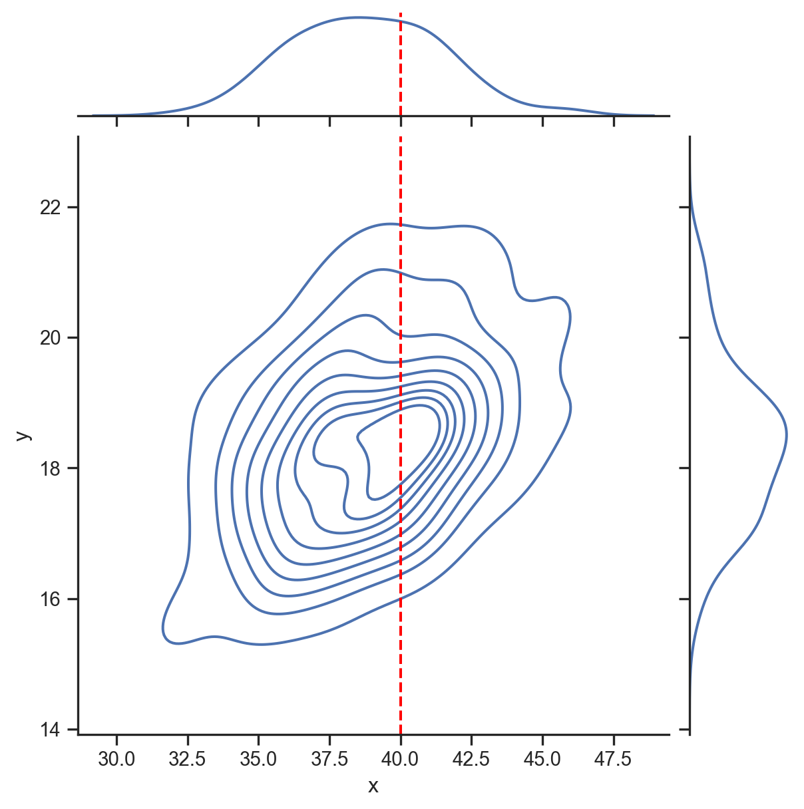
f(x | y = 20)
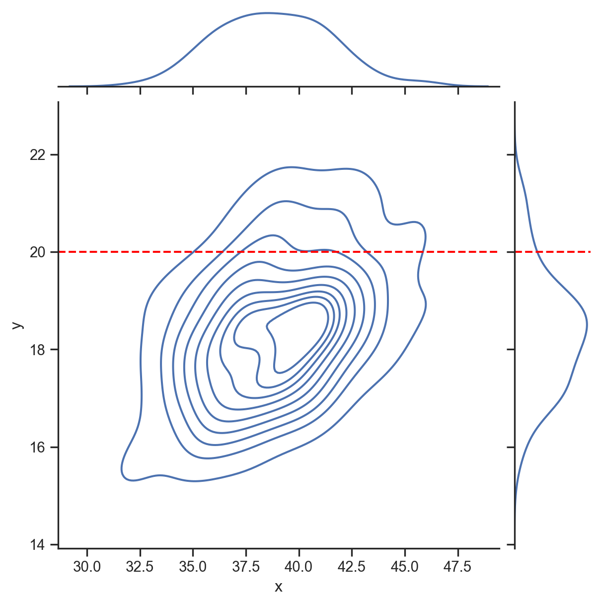
Bayes’ Formula
This formula relates the conditional, marginal, and joint densities. Denote X and Y as two random variables. For any realizations x \in X and y \in Y:
f\left(x|y\right)=\frac{f\left( x,y\right)}{f\left(y\right)}\qquad\text{or\qquad}f\left( x|y\right) \cdot f\left( y\right) = f\left(x,y\right)
Which implies (among other things):
f\left( x|y\right) \cdot f\left( y\right) =f\left( x,y\right)=f\left(y,x\right)=f\left(y|x\right)\cdot f\left(x\right)
The conditional probability is used to update our knowledge. The above formulas are written for densities of continuous variables. For discrete variables, replace densities with probabilities.
Bayes’ Formula - Example
The arrival of financial news can:
- Increase volatility of market returns
- Increase traded volume
- Increase transaction costs
Financial news can be modeled as an indicator (dummy) variable with two realizations:
\begin{aligned} \mathcal{I}_{News}= \begin{cases} 1, & \text{if news arrives} \\ 0, & \text{if no news arrives} \\ \end{cases} \end{aligned}
Assume market volatility has two states1, high (H) and low (L): \begin{aligned} \sigma= \begin{cases} \sigma_{H}, & \text{if} \ \sigma>5 \\ \sigma_{L}, & \text{if} \ \sigma \le 5 \\ \end{cases} \end{aligned}
Marginal Distributions
Approximating marginal distributions of news and volatility from data:
| Days | Count | Fraction |
|---|---|---|
| News | 761 | 0.165 |
| No-news | 3,849 | 0.835 |
| High volatility | 1,432 | 0.311 |
| Low volatility | 3,178 | 0.689 |
| Total | 4,610 | 1.000 |
\begin{aligned} \mathcal{I}_{News}= \begin{cases} 1, & \text{with prob. 0.165} \\ 0, & \text{with prob. 0.835} \\ \end{cases} \end{aligned}
\begin{aligned} \sigma= \begin{cases} \sigma_{H}, & \text{with prob. 0.311} \\ \sigma_{L}, & \text{with prob. 0.689 } \\ \end{cases} \end{aligned}
Joint Distribution
Joint distribution of news and volatility1:
| Days | Count | Fraction |
|---|---|---|
| News and high vol. | 284 | 0.062 |
| News and low vol. | 477 | 0.103 |
| No-news and high vol. | 1,148 | 0.249 |
| No-news and low vol. | 2,701 | 0.586 |
| Total | 4,610 | 1.000 |
\{\sigma, \mathcal{I}_{News}\} = \begin{cases} \{\sigma_{H}, 1\}, & \text{with probability: 0.062} \\ \{\sigma_{L}, 1\}, & \text{with probability: 0.103} \\ \{\sigma_{H}, 0\}, & \text{with probability: 0.249} \\ \{\sigma_{L}, 0\}, & \text{with probability: 0.586} \end{cases}
Estimating Probabilities
Given that we observe \mathcal{I}_{News}=1 we would like to compute the probability of \sigma=\sigma_{H}: \begin{aligned} \mathcal{P}(\sigma=\sigma_{H}\vert \mathcal{I}_{News}=1) & = \dfrac{\mathcal{P}(\sigma=\sigma_{H}, \mathcal{I}_{News}=1)} {\mathcal{P}(\mathcal{I}_{News}=1)}\\ & =\frac{0.062}{0.165}\\ & =0.376 \end{aligned}
Given that we observe \mathcal{I}_{News}=0 we would like to compute the probability of \sigma=\sigma_{H}: \begin{aligned} \mathcal{P}(\sigma=\sigma_{H}\vert \mathcal{I}_{News}=0) & = \dfrac{\mathcal{P}(\sigma=\sigma_{H}, \mathcal{I}_{News}=0)} {\mathcal{P}(\mathcal{I}_{News}=0)}\\ & =\frac{0.249}{0.835}\\ & =0.298 \end{aligned}
Law of total probability
\begin{aligned} \mathcal{P}(X) &= \mathcal{P}(X,Y) + \mathcal{P}(X,Y^{c})\\ &= \mathcal{P}(X\vert Y)\mathcal{P}(Y) + \mathcal{P}(X \vert Y^{c})\mathcal{P}(Y^{c}) \end{aligned}
The events Y and Y^{c} partition X into two mutually exclusive events.
Suppose we observed \sigma=\sigma_{H} and would like to compute \mathcal{P}(\mathcal{I}_{News}=1\vert\sigma=\sigma_{H}):
\mathcal{P}(\mathcal{I}_{News}=1 \vert \sigma=\sigma_{H}) = \dfrac{\mathcal{P}(\sigma=\sigma_{H}, \mathcal{I}_{News}=1)} {\mathcal{P}(\sigma=\sigma_{H})}
Using law of total probability in denominator: \begin{aligned} &= \dfrac{\mathcal{P}(\sigma=\sigma_{H}, \mathcal{I}_{News}=1)} {\mathcal{P}(\sigma=\sigma_{H}\vert \mathcal{I}_{News}=1)\mathcal{P}(\mathcal{I}_{News}=1) + \mathcal{P}(\sigma=\sigma_{H}\vert \mathcal{I}_{News}=0)\mathcal{P}(\mathcal{I}_{News}=0)}\\ &= \dfrac{0.062} {(0.376 \times 0.165) + (0.298 \times 0.835) } \\ &=0.199 \end{aligned}
Bayes’ Formula - Conclusion
High volatility conditional on news/no-news: \begin{aligned} \mathcal{P}(\sigma=\sigma_{H}\vert \mathcal{I}_{News}=1)&=0.376\\ \mathcal{P}(\sigma=\sigma_{H}\vert \mathcal{I}_{News}=0)&=0.298 \end{aligned}
News arrival conditional on realization of high/low volatility: \begin{aligned} \mathcal{P}(\mathcal{I}_{News}=1 \vert \sigma=\sigma_{H})&=0.199\\ \mathcal{P}(\mathcal{I}_{News}=1 \vert \sigma=\sigma_{L})&=0.149 \end{aligned}
Are news and volatility related?
Distributions of Estimators
Assume we have a random variable X_{t}\sim N\left( \mu,\sigma^{2}\right) i.i.d.
- We can estimate \mu by the sample mean \overline{X}=\frac{1}{T} \sum_{t=1}^{T}X_{t}.
- X_{t}\sim N()\Rightarrow \overline{X} will also be normally distributed.
What’s the mean of \overline{X}? E\left( \overline{X}\right) =E\left( \frac{1}{T}\sum_{t=1}^{T}X_{t}\right) =\frac{1}{T}\sum_{t=1}^{T}E\left( X_{t}\right) =\frac{1}{T}\times T\cdot \mu=\mu
What’s the variance of \overline{X}? \begin{align*} Var\left( \overline{X}\right) & =Var\left( \frac{1}{T}\sum_{t=1}^{T}% X_{t}\right) \\ & =\frac{1}{T^{2}}\left( \sum_{t=1}^{T}Var\left( X_{t}\right) +2\sum _{t=1}^{T}\sum_{\tau=t+1}^{T}Cov\left( X_{t},X_{\tau}\right) \right) =\frac{\sigma^{2}}{T}% \end{align*}
Convergence of sample means
Suppose X_{t}\sim i.i.d. with mean \mu and variance \sigma^{2}.
- No assumption of normality! Just independence…
The Weak Law of Large Numbers (WLLN) implies convergence in probability \overline{X}\overset{p}{\rightarrow}\mu\text{ when }T\rightarrow\infty
The Central Limit Theorem (CLT) implies convergence in distribution \frac{\sqrt{T}\left( \overline{X}-\mu\right) }{\sigma}% \overset{d}{\rightarrow}N(0,1)\text{ when }T\rightarrow\infty so \Pr\left( \frac{\sqrt{T}\left( \overline{X}-\mu\right) }{\sigma}<x\right) \rightarrow\Phi\left( x\right) \text{ when }T\rightarrow\infty
Convergence of sample means
Intuition
Recall that if X_{t}\sim i.i.d.\left(\mu,\sigma^{2}\right) and \overline{X}=\frac{1}{T}\sum_{t=1}^{T}X_{t}, then E\left( \overline{X}\right) =\mu\text{ and }Var\left( \overline{X}\right) =\frac{\sigma^{2}}{T}%
- Convergence in probability \overline{X}\overset{p}{\rightarrow}\mu comes from the fact that Var\left( \overline{X}\right) \rightarrow0 when T\rightarrow\infty, which implies that \overline{X} converges to \mu when T\rightarrow\infty.
- Convergence in distribution requires that, even if \overline{X} is converging to \mu, it will never be precisely equal to \mu. If we scale up the difference \overline{X}-\mu by a factor of \frac{\sqrt{T}}{\sigma}, we get a deviation that converges to N(0,1) when T\rightarrow\infty.
Illustration with a simulation
- We simulate T=10,000 draws from a lognormal distribution \sim e^{N(\mu,\sigma)}.1
- We split the sample into 400, 100, and 25 subsamples (of 25, 100, and 400 obs each) and compute the sample mean for each subsample.
- We plot the distribution of the sample means for each subsample size.
- The true mean of the lognormal distribution is e^{\left(\mu + \frac{1}{2}\sigma^2\right)} = e^{0.5} \approx1.65
- The variance of the distribution is e^{2\mu+2\sigma^2}- e^{2\mu+\sigma^2} = e^2 - e \approx 4.67
- Std. dev. is \sqrt{e^2 - e}\approx 2.16.
400 samples of 25 observations
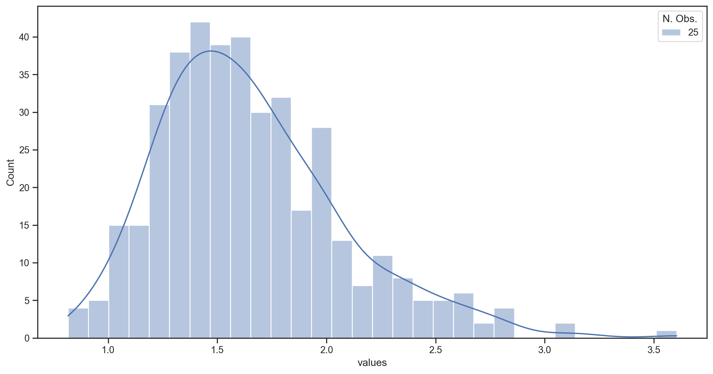
100 samples of 100 observations
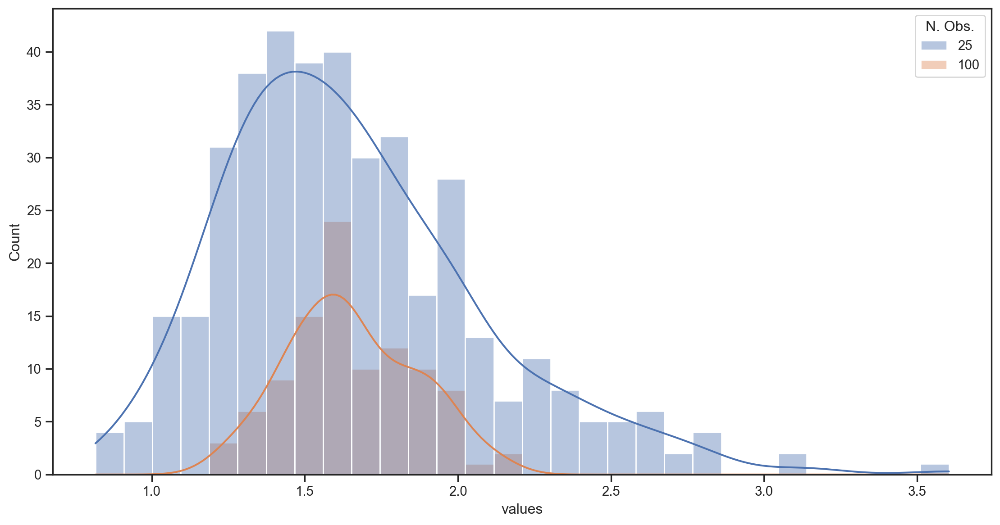
25 samples of 400 observations
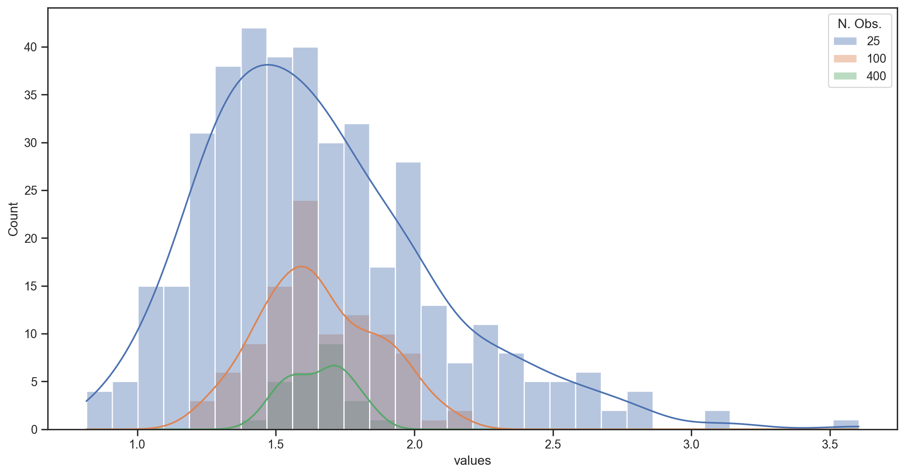
Getting closer at a rate of √N
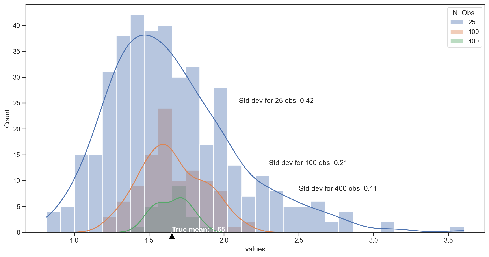
Desirable properties
If we use \widehat{\theta} to estimate \theta, what properties might we wish for?
Unbiasedness: \widehat{\theta} is an unbiased estimator of \theta iff: E\left( \widehat{\theta}\right) =\theta
Consistency: \widehat{\theta} is a consistent estimator of \theta iff: \widehat{\theta}\overset{p}{\rightarrow}\theta\text{ when }T\rightarrow\infty
Efficiency: When \widehat{\theta}_{1} and \widehat{\theta}_{2} are two unbiased estimators of \theta, then \widehat{\theta}_{1} is more efficient than \widehat{\theta}_{2} iff Var\left( \widehat{\theta}_{1}\right) <Var\left( \widehat{\theta}% _{2}\right)
- \widehat{\theta} is an efficient estimator if it is the minimum-variance estimator.
- The Cramer-Rao Lower Bound gives the minimum variance limit for some distributions.
Confidence Intervals
A confidence interval is an interval constructed around some estimator \widehat{\theta} which has a specified probability of containing \theta.
Example: Suppose X_{t}\sim N\left( \mu,\sigma^{2}\right) and \overline{X}=\frac{1}{T}\sum_{t=1}^{T}X_{t}
The X_{t} are Gaussian, so \overline{X}\sim N\left( \mu,\frac{\sigma^{2}}{T}\right), which implies \frac{\overline{X}-\mu}{\frac{\sigma}{\sqrt{T}}}\sim N\left( 0,1\right)
Suppose there are two values l and u such that \Phi\left( l\right) =\alpha/2 and \Phi\left( u\right) =1-\alpha/2. Therefore \Pr\left( l<\frac{\overline{X}-\mu}{\frac{\sigma}{\sqrt{T}}}<u\right) =1-\alpha
A confidence interval with level 1-\alpha for the true mean \mu will therefore be given by l<\frac{\overline{X}-\mu}{\frac{\sigma}{\sqrt{T}}}<u\Leftrightarrow\mu \in\left[ \overline{X}-\frac{\sigma}{\sqrt{T}}u,\text{ }\overline{X}% -\frac{\sigma}{\sqrt{T}}l\right]
C.I. for the mean of a normal distribution
viewof mu4 = Inputs.range([-3, 3], {
step: 0.01,
value: 0,
label: tex`\bar{X}:`,
width: "300px"
})
viewof sigma4 = Inputs.range([1, 10], {
step: 0.1,
value: 5,
label: tex`\sigma:`,
width: "300px"
})
viewof sampleT = Inputs.range([10, 100], {
step: 1,
value: 30,
label: tex`T:`,
width: "300px"
})
viewof alpha = Inputs.range([0, 0.4], {
step: 0.01,
value: 0.05,
label: tex`\alpha:`,
width: "300px"
})
// Arrange sliders side by side
html`<div style="display: flex; gap: 60px; margin-bottom: 50px;">
${viewof mu4}
${viewof sigma4}
</div><div style="display: flex; gap: 60px; margin-bottom: 50px;">
${viewof sampleT}
${viewof alpha}
</div>`Plot.plot({
y: {
domain: [0, 5],
label: "f(x)"
},
x: {
domain: [-1.5, 1.5],
label: "x"
},
marks: [
Plot.line(
[{x: mu4, y: 0},{x: mu4, y: jStat.normal.pdf(0, 0, sigma4/sampleT)}],
{x: "x", y: "y", stroke: "red"}
),
Plot.line(
d3.range(-1.5, 1.5, 0.01).map(x => ({x, y: jStat.normal.pdf(x, mu4, sigma4/sampleT)})),
{x: "x", y: "y"}
),
Plot.areaY(
d3.range(mu4 - jStat.normal.inv(1 - alpha / 2, 0, 1) * sigma4/ sampleT, mu4 + jStat.normal.inv(1 - alpha / 2, 0, 1) * sigma4/sampleT, 0.01).map(x => ({x, y: jStat.normal.pdf(x, mu4, sigma4/sampleT)})),
{x: "x", y: "y", fillOpacity: 0.3, fill: "#0072ce"}
),
],
grid: true,
height: 450,
width: 1050,
style: {
backgroundColor: "white"
}
})Classical Hypothesis Tests
In a (classical) Hypothesis Test
- We specify a null hypothesis (H_{0}) about the value of the parameter \mu in the population.
- We choose an estimator for \mu (sometimes implicitly) such that we know its distribution if \mu takes the hypothesized value.
- We then try to reject H_{0} by comparing it to an alternative hypothesis H_{A}.
- Our criterion for rejection is: is the test statistic sufficiently unlikely to have been observed if the null is true?
Examples: \begin{align*} H_{0} & :\mu=\mu_{0};\text{ \ \ \ }H_{A}:\mu<\mu_{0}\\ H_{0} & :\mu=\mu_{0};\text{ \ \ \ }H_{A}:\mu>\mu_{0}\\ H_{0} & :\mu=\mu_{0};\text{ \ \ \ }H_{A}:\mu\neq\mu_{0}% \end{align*}
- If \mu_{0} is within the 1-\alpha confidence interval for \mu, we cannot reject H_{0}.
Significance Level
Rejecting or accepting H_{0} depends on the choice of \alpha.
- 1-\alpha is called the confidence level of a test
- \alpha is called the significance level of a test
- The size of a test is the probability that we reject a true H_{0}.
- A test is valid when its size is no greater than its significance level \alpha
- When a test suffers from size distortion, it is no longer a valid test.
p-value
The p-value of a test is the smallest value \alpha_{0} for which we can still reject H_{0}.
- Suppose \widehat{\theta}\sim t_{10} if H_{0}:\theta=0 is true.
- If \widehat{\theta}=2.5, then p-value =1-F_{t_{10}}\left(2.5\right)=0.0157.
- If \widehat{\theta}=1.5, then p-value =1-F_{t_{10}}\left(1.5\right)=0.0823.
- The significance level depends on the critical value we choose.
- The size also depends on the true distribution of \widehat{\theta} under H_{0}.
- The p-value depends on the true distribution of \widehat{\theta} under H_{0} as well as the value of our test statistic \widehat{\theta}.
Errors: Types I and II
Hypothesis tests have two types of possible errors:
| Probability | if H_{0} is true | if H_{0} is false |
|---|---|---|
| of not rejecting H_{0} | 1-\alpha | \beta |
| of rejecting H_{0} | \alpha | 1-\beta |
- \alpha is the probability of type I error.
- \beta is the probability of type II error.
In classical hypothesis testing, we control type I error but not type II error.
Decision Theory tries to balance the probability of both types of error.
- For example, by using large values of \alpha when T is small, and small values of \alpha when T is large.
- Why? If \alpha is fixed, \beta shrinks when T increases.
Test Power
1-\beta is the power of a test.
- Power tells us the probability of rejecting a null hypothesis that is false.
- Power depends on the alternative hypothesis. An alternative which is close to the null will be more difficult to reject than an alternative that is far from the null.
- Suppose the null hypothesis is H_{0}:\mu=0
- The power of the test of H_{0} against the alternative H_{A}:\mu=6 will be much greater than that of the test of H_{0} against the alternative H_{A}:\mu=0.01.
- A good statistician keeps in mind both the size and the power of their tests.
When rejecting H_{0}, the size of the test matters.
When unable to reject H_{0}, the power of the test matters.
More on Classical Hypothesis Testing
Classical hypothesis tests are really only informative when we reject the null hypothesis.
- Failure to reject the null does not imply that the null is correct.
- Never say “the test results prove that the null hypothesis is correct.”
- When we are unable to reject the null, we usually have no idea of the probability of rejecting it when it is false.
This is a lot like a legal trial.
- People are innocent until proven guilty.
- A verdict of “innocent” does not prove innocence. It just means that there was not enough evidence to convict (i.e. reasonable doubt).
Economic and Statistical Significance
Statistical Significance Can we reject the null hypothesis at typical confidence levels?
Economic Significance Is the difference between our estimate and the null hypothesis important or interesting?
Example Suppose we’re examining the annual \alpha1 of trading strategies.
- If \widehat{\alpha}_{momentum}=0.1\% and we reject the null: H_{0}:{\alpha}_{momentum}=0, the performance is statistically significant, but not economically.
- If \widehat{\alpha}_{secret}=22\% and we don’t reject the null, the performance is still economically significant (and our test lacks power).
p-values: Context

p-values: Context
2016 ASA Statement on Statistical Significance and p-values (Wasserstein and Lazar 2016)
Reproducibility Across many research fields, a “surprising” fraction of published findings don’t survive further scrutiny. (e.g. Drug trials, excess returns, economic policy impacts)
The list of references 26 in Health Science, 8 in Statistics, 5 Other, 0 Finance
Results “…much confusion and even doubt about the validity of science is arising. Such doubt can lead to radical choices, such as the one taken by the editors of Basic and Applied Social Psychology, who decided to ban p-values (null hypothesis significance testing).”
p-values: Context
2016 ASA Statement on Statistical Significance and p-values (Wasserstein and Lazar 2016)
Underpinning many published scientific conclusions is the concept of “statistical significance,” typically assessed with an index called the p-value. While the p-value can be a useful statistical measure, it is commonly misused and misinterpreted. This has led to some scientific journals discouraging the use of p-values, and some scientists and statisticians recommending their abandonment, with some arguments essentially unchanged since p-values were first introduced.
Principles
- p-values can indicate how incompatible the data are with a specified statistical model.
- This incompatibility can be interpreted as casting doubt on or providing evidence against the null hypothesis or the underlying assumptions.
- p-values do not measure the probability that the studied hypothesis is true, or the probability that the data were produced by random chance alone.
- Researchers often wish to turn a p-value into a statement about the truth of a null hypothesis or about the probability that random chance produced the observed data. The p-value is neither.
Principles
- Scientific conclusions and business or policy decisions should not be based only on whether a p-value passes a specific threshold.
- Researchers should bring many contextual factors into play to derive scientific inferences, including the design of a study, the quality of the measurements, the external evidence for the phenomenon under study, and the validity of assumptions that underlie the data analysis.
- The widespread use of “statistical significance” (generally interpreted as p\leq0.05) as a license for making a claim of a scientific finding (or implied truth) leads to considerable distortion of the scientific process.
- Proper inference requires full reporting and transparency.
- Valid scientific conclusions based on p-values and related statistics cannot be drawn without at least knowing how many and which analyses were conducted, and how those analyses (including p-values) were selected for reporting.
Principles
- A p-value, or statistical significance, does not measure the size of an effect or the importance of a result.
- Statistical significance is not equivalent to scientific, human, or economic significance.
- By itself, a p-value does not provide a good measure of evidence regarding a model or hypothesis.
- A relatively large p-value does not imply evidence in favor of the null hypothesis; many other hypotheses may be equally or more consistent with the observed data.
Principles
“What do you hope this statement will accomplish?”
We have big dreams for this statement. We’d love to see the practice of science with respect to its use of statistical inference undergo a cultural shift. We envision a “post p<0.05 era,” one in which scientific argumentation is not based on whether a p-value is small enough. In this era, attention would be paid to effect sizes and confidence intervals. …journals will stop using statistical significance to determine whether to accept an article. Instead, journals will accept papers based on a clear and detailed description of the study design, execution, and analysis. ….We won’t be left scratching our heads trying to sort out researcher degrees of freedom.
ASA President Jessica Utts, Amstat News, April 2016
Eugene Fama on Statistics
“…I came to the University of Chicago in 1960…In my first year I took an intermediate statistics class with a professor named Harry Roberts…what I learned from Harry was a philosophy. He gave me an attitude toward statistics that has stuck with me ever since.
With formal statistics, you say something – a hypothesis – and then you test it. Harry always said that your criterion should be not whether or not you can reject or accept the hypothesis, but what you can learn from the data. The best thing you can do is use the data to enhance your description of the world. That has been the guiding light of my research. You should use market data to understand markets better, not to say this or that hypothesis is literally true or false. No model is ever strictly true. The real criterion should be: Do I know more about markets when I’m finished than I did when I started? Harry’s lesson is one that I’ve passed on to my students over the 49 years that I’ve been a teacher.
Confidence Intervals
In recent decades, economic practices have evolved and focused on:
- Identification
- Economic and statistical significance
- Using correct standard errors
- New methods for dynamics, heterogeneity, and nonlinearities.
However, most papers concentrate on:
- Whether the point estimates are statistically significantly different from zero.
- Economic interpretation of the point estimates.
In Praise of Confidence Intervals (Romer 2020)
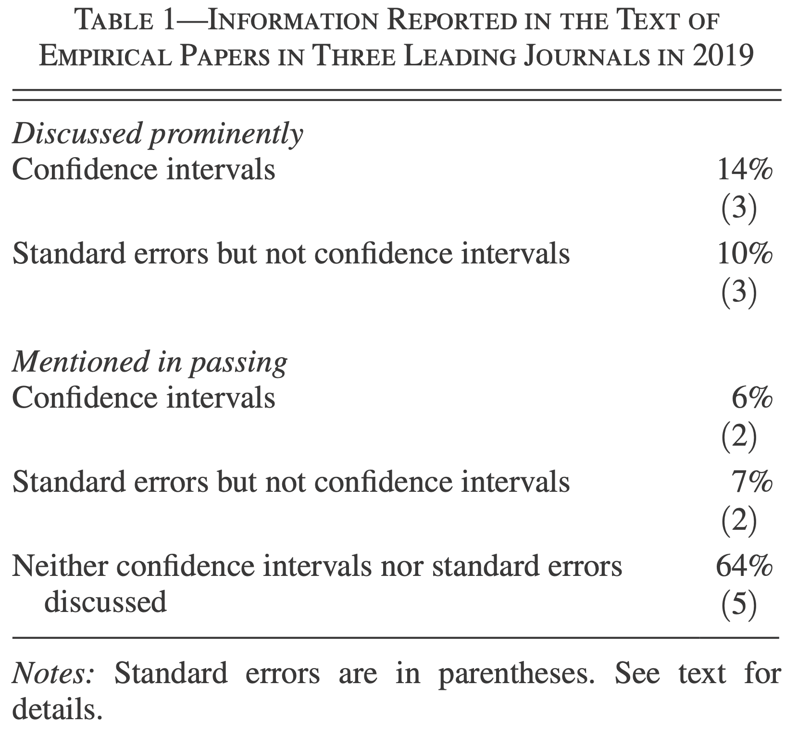
Why are t-stat or p-values not enough?
- Sometimes we care about more than rejecting a value of 0.
- Decision makers sometimes want to compare to a “threshold” for action.
- A t-statistic of 2.1 or 2.6 is merely strong evidence against a value of zero, while a t-statistic of 4.0 is overwhelming evidence.
- Smaller t-statistics provide strong evidence against a value of zero, they provide only moderate evidence against many values that are much closer to zero than to the point estimate.
- It is rare for there to be no issues or concerns with the estimates and standard errors.
Solution
- Report and discuss a confidence interval.
- In contrast to reporting a point estimate and whether it is statistically significantly different from zero, reporting a confidence interval provides information about the full range of possible values of the parameter.
But, which interval to report?
- With the traditional 2 standard error interval (\sim 95\%), boundary values are 7 times less likely than the point estimate. Is it worth reporting the whole range?
- 90% (1.645 standard error) bands, they appear to be the most natural alternative, point estimate is 4 times more likely than boundary values.
- Even better, report both!
Multiple Hypotheses Testing
Explanation of the Problem
Occurs when researchers perform a large amount of similar tests to determine whether a joint null hypothesis must be rejected.
As more tests are done, the laws of probability indicate that the odds of false positives become very important.
Becomes a problem when rejection of one amongst many nulls is considered sufficient grounds for rejecting the joint null.
See 🍬 xkcd
Bonferroni Tests
Suppose we want to test a joint null hypothesis at a significance level of \alpha: H_{0}:\mu_{i}=0,\text{ }\forall\text{ }i=1,...,N The alternative hypothesis is H_{A}:\exists\text{ at least one }i\text{ such that }\mu_{i}\neq0
- We could do a separate test for each parameter \mu_{i}: H_{0}^{(i)}:\mu_{i}=0,\text{ }i=1,...,N As soon as we find an i for which \left\vert t_{i}\right\vert >z_{\alpha} \Rightarrow reject H_{0}^{(i)},H_{0}
If the tests are independent, they will give us a rate of acceptance of H_{0} of \left( 1-\alpha\right) ^{N}, which implies a rejection rate of: 1-\left( 1-\alpha\right) ^{N}\neq\alpha
Bonferroni Tests
A Bonferroni test simply adjusts the significance level \alpha of the individual tests: H_{0}^{(i)}:\mu_{i}=0,\text{ }i=1,...,N It uses \left\vert t_{i}\right\vert >z_{\alpha/N}\Rightarrow reject H_{0}^{(i)}, i=1,...,N.
This gives an overall rejection rate for H_{0} \leq\alpha.
Bonferroni Tests
viewof numTests = Inputs.range([1, 100], {
step: 1,
value: 10,
label: tex`N`,
width: "450px"
})
viewof alpha2 = Inputs.range([0.01, 0.1], {
step: 0.01,
value: 0.05,
label: tex`\alpha`,
width: "450px"
})
// Arrange sliders side by side
html`<div style="display: flex; gap: 200px; margin-bottom: 20px;">
${viewof numTests}
${viewof alpha2}
</div>`bonferroniAlpha = alpha2 / numTests;
// Display the adjusted significance level
html`<div style="display: flex; gap: 100px; margin-bottom: 20px;">
<p><div>Bonferroni-Adjusted ${tex`\alpha`}: ${bonferroniAlpha.toFixed(4)}</div><div> ${tex`1-\left( 1-\alpha\right)^N=`} ${(1 - Math.pow(1 - alpha2, numTests)).toFixed(4)}</div></p>
</div>`pValues = d3.range(numTests).map(() => Math.random());
// Plot the p-values and the significance thresholds
Plot.plot({
y: {
domain: [0, 1],
label: "p-value"
},
x: {
domain: [1, numTests],
label: "Test Number"
},
marks: [
Plot.ruleY([alpha2], {stroke: "red", strokeWidth: 2, strokeDasharray: "4 4", label: "alpha"}),
Plot.ruleY([bonferroniAlpha], {stroke: "blue", strokeWidth: 2, strokeDasharray: "4 4", label: "Bonferroni alpha"}),
Plot.dot(pValues.map((p, i) => ({x: i + 1, y: p})), {x: "x", y: "y"})
],
grid: true,
height: 500,
width: 1050,
style: {
backgroundColor: "white"
}
})Bonferroni Tests
Advantages:
- The size of the joint test does not exceed the desired significance level \alpha.
- Easy to use.
- We don’t need to estimate the covariance of the parameter estimates that we seek to test.
Disadvantages:
- Not necessarily the most powerful test.
- More powerful tests usually require estimates of that covariance matrix.
Goodness-of-Fit Tests
Pearson
We want to test H_{0}:x\sim f\left( ~\right)
- N\left( 0,1\right)? Gaussian? ARCH residuals \sim t\left(d\right)?
We could… draw a histogram.
- Need to choose the number of bins K.
- Compare the observed frequencies b_{i} to the expected frequencies e_{i} under H_{0}.
e_{i}\equiv F\left( u_{i}\right) -F\left( l_{i}\right) , \text{ where } \left[ l_{i},u_{i}\right] \text{ define the }i\text{th bin} b_{i}\equiv\% \text{ of sample in the interval }\left[ l_{i},u_{i}\right].
Pearson’s Goodness of Fit Test (1900)
q = \sum_{i=1}^{K}\frac{T\left( b_{i}-e_{i}\right) ^{2}}{e_{i}} \sim \chi^{2}(K-1-p) \text{ for large } T where p\equiv\# \text{ estimated parameters}.
- Reject H_{0} if q> critical value.
Goodness-of-Fit Tests
Pearson
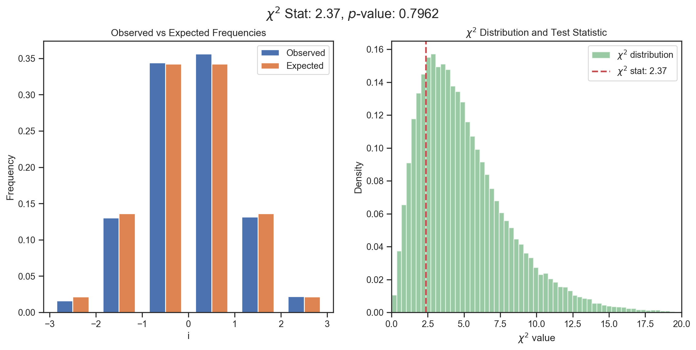
Degrees of Freedom
When testing hypotheses, we’ll often talk about the degrees of freedom (dof)
- In statistics, dof\approx T-p.
- T\equiv number of (independent) observations.
- p\equiv number of parameters estimated (explicitly or implicitly).
- As p increases, the fit improves. We need to correct for this.
Example Pearson’s Goodness of Fit Test: q = \sum_{i=1}^{K}\frac{T\left( b_{i}-e_{i}\right) ^{2}}{e_{i}} \sim \chi^{2}(K-1-p) In this case, dof=K-p.
The Empirical CDF (ECDF)
Definition: The Empirical CDF (ECDF) is a non-decreasing step function 0 \leq \widehat{F}\left( x\right) \leq 1 such that
\widehat{F}\left(x\right)\equiv\frac{1}{N}\cdot\sum_{i=1}^{N}1\left( x-x_{i}\right)
where we have observations \{x_{1},\ldots,x_{N}\}.
- \Rightarrow \widehat{F}\left(x_{i}\right) is the fraction of the sample <x_{i}.
The Empirical CDF (ECDF)
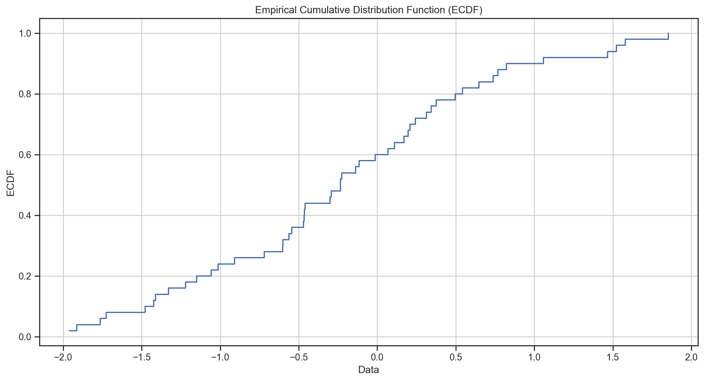
Goodness-of-Fit Tests
Kolmogorov-Smirnov (KS)
One Sample: H_{0}: F\left( ~\right) = G\left( ~\right) where we specify G.
Two Sample: H_{0}: F\left( ~\right) = G\left( ~\right) where G is the unknown distribution of a second sample y.
The KS test uses the empirical CDF \widehat{F}\left( x_{i}\right).
The test statistic is:
One Sample: D = \underset{i}{\sup}\left\vert \widehat{F}\left( x_{i}\right) - G\left( x_{i}\right) \right\vert
Two Sample: D = \underset{i}{\sup}\left\vert \widehat{F}\left( x_{i}\right) - \widehat{G}\left( y_{i}\right) \right\vert
Goodness-of-Fit Tests
Kolmogorov-Smirnov (KS)
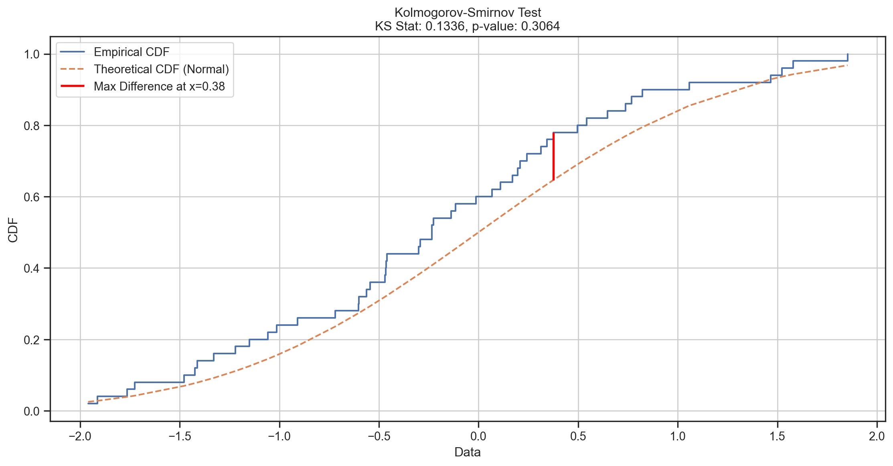
Goodness-of-Fit Tests
Kolmogorov-Smirnov (KS)
The Kolmogorov-Smirnov test has some advantages over other the more popular Pearson test:
- No need to choose K.
- More powerful (uses all T observations, not just K bins).
- Exact distribution is known under H_{0}, even for small T.
It also has some disadvantages:
- Non-standard distribution under H_{0}.
- Not the most powerful test if we estimate parameters of G\left( \right) (e.g. N\left( \widehat{\mu},\widehat{\sigma}\right)).
QQ and P-P Plots
How can we compare an empirical distribution to a theoretical distribution?
- Goodness-of-Fit Tests:
- e.g. Pearson, Kolmogorov-Smirnov
- H_{0}:F\left( \tau\right) = \widehat{F}\left( \tau\right)
- But these test the whole distribution; for tests we mostly just care about the tails (i.e. do we have the right critical values?)
- How powerful are these tests? in the tails? Should we worry about type II error?
- Graphical Methods:
- e.g. QQ plots, P-P plots (see, e.g., Davidson and MacKinnon 1998)
QQ Plots
Given a sample \{X_{t}\}, they plot the quantiles of F\left( .\right) on x-axis vs \widehat{F}\left( .\right) on y-axis.
i.e. \{F^{-1}\left( \widehat{F}\left( X_{t}\right) \right)\} on x-axis vs X_{t} on y-axis \forall t.
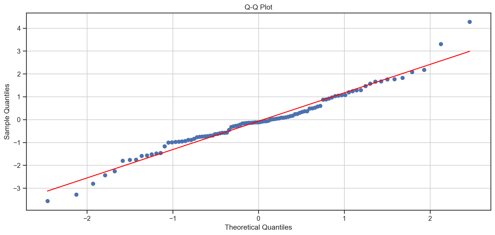
Kernel Density Estimator
A typical histogram looks more like a big city skyline than a density function and its appearance is sensitive to the number and locations of its cells.
A much better estimator is the kernel density estimator (KDE): \widehat{f}(y) = \frac{1}{nb} \sum_{i=1}^{n} K \left(\frac{y-Y_i}{b}\right) where b, which is called the bandwidth, determines the resolution of the estimator. K is the kernel function, which is a probability density function that is symmetric about 0. The standard normal density function is a common choice for K.
Kernel Density Estimator
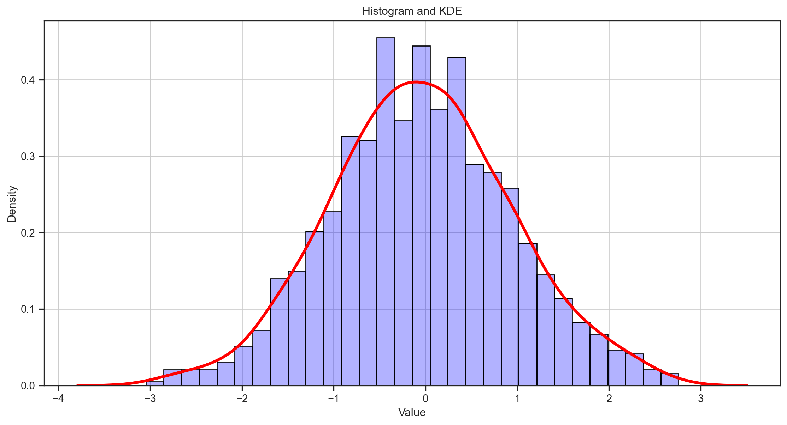
Kernel Density Estimate Plot
A kernel density estimate (KDE) plot is a method for visualizing the distribution of observations in a dataset, analogous to a histogram. KDE represents the data using a continuous probability density curve in one or more dimensions.
Relative to a histogram, KDE can produce a plot that is less cluttered and more interpretable, especially when drawing multiple distributions. But it has the potential to introduce distortions if the underlying distribution is bounded or not smooth.
Kernel Density Estimation
data = d3.range(50).map(() => jStat.normal.sample(0, 1))
// Create a slider for bandwidth
viewof bandwidth = Inputs.range([0.02, 1], {
step: 0.02,
value: 0.4,
label: tex`b`,
width: "600px"
})
// Function to calculate KDE
function kde(data, bandwidth) {
const kernel = x => Math.exp(-0.5 * x * x) / Math.sqrt(2 * Math.PI)
const scale = 1 / (data.length * bandwidth)
return d3.range(-3, 3, 0.01).map(x => ({
x,
y: d3.sum(data, d => kernel((x - d) / bandwidth)) * scale
}))
}
// Plot the KDE with variable bandwidth
Plot.plot({
y: {
label: "Density"
},
x: {
label: "Value"
},
marks: [
Plot.line(kde(data, bandwidth), {x: "x", y: "y", stroke: "red", strokeWidth: 2})
],
grid: true,
height: 500,
width: 1050,
style: {
backgroundColor: "white"
}
})References
Baker, Monya et al. 2016. “Statisticians Issue Warning on p Values.” Nature 531 (7593): 151–51.
Baltagi, Badi H. 2022. Econometrics. 6th ed. Classroom Companion: Economics. Springer Cham. https://doi.org/10.1007/978-3-030-80149-6.
Davidson, Russell, and James G MacKinnon. 1998. “Graphical Methods for Investigating the Size and Power of Hypothesis Tests.” The Manchester School 66 (1): 1–26.
Fortune. 2012. “The Best Advice I Ever Got.” Fortune. https://fortune.com/2012/10/25/the-best-advice-i-ever-got/.
Romer, David. 2020. “In Praise of Confidence Intervals.” In AEA Papers and Proceedings, 110:55–60. American Economic Association.
Wasserstein, Ronald L, and Nicole A Lazar. 2016. “The ASA Statement on p-Values: Context, Process, and Purpose.” The American Statistician. Taylor & Francis.

MATH60230